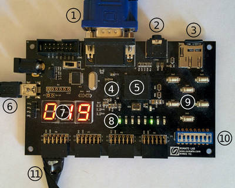
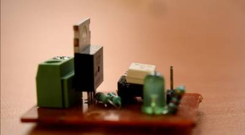
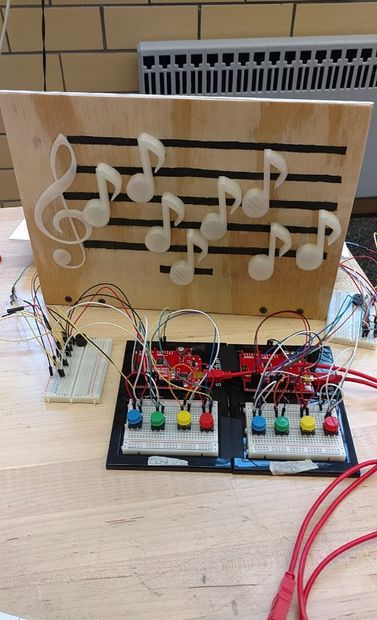

2016-07-07 - Nº 62

Editorial
Esta é a Newsletter Nº 62 que se apresenta com o mesmo formato que as anteriores. Se gostar da Newsletter partilhe-a!
Todas as Newsletters encontram-se indexadas no link.
Esta Newsletter tem os seguintes tópicos:
Esta semana a Sonda Juno entrou com sucesso na órbita de Júpiter. Cinco anos após ter iniciado a sua viagem rumo ao planeta a nave entra na órbita de Júpiter. A China finalizou a construção do maior rádio telescópio constituído por 4450 painéis. Este telescópio fica localizado na província de Guizhou.
Na passada sexta-feira fizemos a montagem da helloBeePrusa e podem ver o timelapse aqui. Esta semana a Newsletter é mais condensada e feita a partir dos Açores, esse belo paraíso plantado no meio do Atlântico. Não existe a rubrica de documentação. Mas podem contar com diversos projectos de maker.
 João Alves ([email protected])
João Alves ([email protected])
O conteúdo da Newsletter encontra-se sob a licença  Creative Commons Attribution-NonCommercial-ShareAlike 4.0 International License.
Creative Commons Attribution-NonCommercial-ShareAlike 4.0 International License.
Novidades da Semana ^
NASA's Juno Spacecraft in Orbit Around Mighty Jupiter
"After an almost five-year journey to the solar system’s largest planet, NASA's Juno spacecraft successfully entered Jupiter’s orbit during a 35-minute engine burn. Confirmation that the burn had completed was received on Earth at 8:53 p.m. PDT (11:53 p.m. EDT) Monday, July 4. “Independence Day always is something to celebrate, but today we can add to America’s birthday another reason to cheer -- Juno is at Jupiter,” said NASA administrator Charlie Bolden. “And what is more American than a NASA mission going boldly where no spacecraft has gone before? With Juno, we will investigate the unknowns of Jupiter’s massive radiation belts to delve deep into not only the planet’s interior, but into how Jupiter was born and how our entire solar system evolved.”"
Curiosity Rover Enters Precautionary Safe Mode
"The team operating NASA's Curiosity Mars rover is taking steps to return the rover to full activity following a precautionary stand-down over the Fourth of July weekend. Curiosity is now communicating with ground controllers and is stable. The rover put itself into safe mode on July 2, ceasing most activities other than keeping itself healthy and following a prescribed sequence for resuming communications. Engineers are working to determine the cause of safe-mode entry. Preliminary information indicates an unexpected mismatch between camera software and data-processing software in the main computer. The near-term steps toward resuming full activities begin with requesting more diagnostic information from Curiosity."
Xinhua Insight: Installation complete on world's largest radio telescope
" Installation was completed on the world's largest radio telescope on Sunday morning as the last of 4,450 panels was fitted into the center of the big dish. Hoisting of the last triangular panel to the reflector, which is the size of 30 football fields, began at 10:47 a.m. and lasted about an hour. It was a landmark step for the telescope's planned launch of operations in September. About 300 people, including builders, experts, science fiction enthusiasts and reporters, witnessed the installation at a karst valley in Pingtang County in the southwestern province of Guizhou."
Outras notícias
- The Largest Maker Survey Is Here. And It's Yours.
- London inventor of new omni-directional wheels says his prototype is better than existing products
- BMW Group, Intel and Mobileye Team Up to Bring Fully Autonomous Driving to Streets by 2021
- The Netherlands has first nationwide LoRa network for Internet of Things
Ciência e Tecnologia ^
Atomic Sculpting with a Microscope
"A new tool now rests in the 3D printing toolbox. The electron beam in a scanning transmission electron microscope has been exquisitely controlled with specially programmed electronics to tunnel into non-crystalline material and construct 3D features that are in perfect alignment with the underlying substrate (i.e., epitaxial). The result is designer materials with desirable structures, such as microchips, or materials with unique properties. Essentially, any shape can be created by exposing patterned areas to higher numbers of electrons than non-patterned areas, resulting in epitaxial 3D features down to 1-2 nanometers —less that the width of a strand of DNA."
HPE shows off a computer intended to emulate the human brain

"Intelligent computers that can make decisions like humans may someday be on Hewlett Packard Enterprise's product roadmap. The company has been showing off a prototype computer designed to emulate the way the brain makes calculations. It's based on a new architecture that could define how future computers work. The brain can be seen as an extremely power-efficient biological computer. Brains take in a lot of data related to sights, sounds and smell, which they have to process in parallel without lagging, in terms of computation speed."
3D printing enables the smalles complex micro-objectives
"3D printing revolutionized the manufacturing of complex shapes in the last few years. Using additive depositing of materials, where individual dots or lines are written sequentially, even the most complex devices could be realized fast and easy. This method is now also available for optical elements. Researchers at University of Stuttgart in Germany have used an ultrashort laser pulses in combination with optical photoresist to create optical lenses which are hardly larger than a human hair."
New microfluidic device offers means for studying electric field cancer therapy
"Researchers at MIT’s research center in Singapore have developed a new microfluidic device that tests the effects of electric fields on cancer cells. They observed that a range of low-intensity, middle-frequency electric fields effectively stopped breast and lung cancer cells from growing and spreading, while having no adverse effect on neighboring healthy cells. The device, about the size of a U.S. dollar coin, is designed to help scientists narrow in on safe ranges of electric fields to noninvasively treat breast, lung, and other forms of cancer. The results are published online in Scientific Reports."
Quantum processor for single photons

"In all modern computers, data processing is based on information being binary-coded and then processed using logical operations. This is done using so-called logic gates which assign predefined output values to each input via deterministic protocols. Likewise, for the information processing in quantum computers, quantum logic gates are the key elements. To realise a universal quantum computer, it is necessary that every input quantum bit can cause a maximal change of the other quantum bits. The practical difficulty lies in the special nature of quantum information: in contrast to classical bits, it cannot be copied. Therefore, classical methods for error correction cannot be applied, and the gate must function for every single photon that carries information. Because of the special importance of photons as information carriers – for example, for communicating quantum information in extended quantum networks – the realisation of a deterministic photon-photon gate has been a long-standing goal. One of several possibilities to encode photonic quantum bits is the use of polarisation states of single photons. Then the states “0” and “1” of a classical bit correspond to two orthogonal polarisation states. In the two-photon gate, the polarisation of each photon can influence the polarisation of the other photon. As in the classical logic gate it is specified beforehand which input polarisation leads to which output polarisation. For example, a linear polarisation of the second photon is rotated by 90° if the first one is in the logic state “1”, and remains unchanged if the first one is in “0”. In contrast to classical logic gates, which would be fully specified by such a description, a quantum gate can take on an infinite number of possible input states. The quantum logic gate has to create the correct combination of output states for each one of these."
Modelos 3D ^
Com a disponibilidade de ferramentas que permitem dar azo a nossa imaginação na criação de peças 3D e espaços como o thingiverse para as publicar, esta rubrica apresenta alguns modelos selecionados que poderão ser úteis.
M3 Spacers
Set of spacers for M3 bolts.
They are 2.5mm, 5mm, 7.5mm, 10mm tall.
The second set is 1mm high. You can change the Z scale to make them any height.
Enjoy
Can Handle
Snaps on to a soda / beer can for easier handling and identifying. Open handle allows for hanging on other objects / clothing. Files for standard can and tall boy.
Customizable Radius Gauge - Metric
This is a customizable version of my metric radius gauge.
The gauge set shown in the photos was printed using eSun PETG black: http://amzn.to/28WRGNd
The holes in the gauges allow them to be kept in sets on 2" binder rings: http://amzn.to/28WXXX8
Projetos Maker ^
Diversos Projetos interessantes.
Ultrasonic sonar for the blind and visually impaired
"This article is intended to show how to build and use an accessibility device I've designed to assist people who are at various levels of visual impairment. The idea behind the device is to use an ultrasonic range-finder sensor, and translate its reading into an audible indication of distance of objects up to 4 meters away, thereby giving a person who is visually impaired a better sense of their immediate surroundings. Aside from the utility of the device, several other key features of the device include that it is wearable, has a long battery life, is fairly light-weight, and is built from rather inexpensive parts."
Auduino - Lo-Fi Arduino Synthesizer
"In this instructable I will show you how I made the Auduino synthesizer. It is meant to be listened on headphones but if you want to listen on speaker you will have to use an amplifier which I will show in other instructable. The circuit is relatively simple. For me the hardest part was to burn the bootloader on a blank atmega328 and uploading the program."
-

"The Megaprocessor is a micro-processor built large. Very large. Like all modern processors the Megaprocessor is built from transistors. It's just that instead of using teeny-weeny ones integrated on a silicon chip it uses discrete individual ones like those below. Thousands of them. And loads of LEDs."
Arduino Chromatic Clock, with Steampunk style
"Need a unique gift for Christmas? ... This watch unlike normal, uses colors instead of numbers, yes! you read right .... After maaany years of reading color codes of resistors and capacitors I believe that it could be used for something a little more original. This watch uses a module RTC DS3231 of high stability and accuracy, and a moisture module DTH22 . Includes a LDR light sensor to adjust the brightness of the LEDs WS2812 responsible for the 'digits'. The digits are expressed by colors and most correspond to the colors used in electronics to indicate the values except 0, which goes from black to weak white, so that it can see in the dark, and 8 passes from gray to cyan because gray is not possible"
ULTRA CHEEP HOME AUTOMATION UNDER $5
"Today I am back with another project called ultra cheep home automation under $5. Home automation means you can control home applies more easily. You can control your fan lights exits with tip of your finger or allow them to work automatically"
Modify an RGB LED kit to power more LEDs
"It is indeed possible to modify an RGB LED kit to accommodate a longer length of RGB strip."
A Morse Code Translator( Light -> Text & Text ->Light)
"the project is divided into two main states(Read Light and Write Light) which are transitionable by a button 1-converting Light to Text, this was the most challenging part; using an LDR i needed to differentiate between a dot and a dash so I had to keep track of time the moment the light goes on till it goes off, and also I needed to differentiate between the end of letters and Words which is also done by keeping track of time the moment the light goes off till it's on again. the most exciting part however, is that I made a Binary tree and Node class to represent the Morse code graph so I could save a lot of time and processing power traversing through the tree finding letters from a dot and dash sequence with the simple logic"
Tri-Mode Digital Clock With ATtiny85 and RTC
"This is my first project using ATtiny85 microcontroller and also including a Real Time Clock (RTC) working with it. The use of ATtiny85 is a very interesting way to shrink your Arduino projects in a final tiny version."
3d Printing: Zizzy-A Robot Assistant
"Zizzy is a personal robot prototype for people with limited mobility. The head, body, arms, mounting brackets, air valves, and the artificial muscles that actuate it, are all 3d printed. While no one is likely to try and duplicate this robot exactly, the body and arms, muscles and muscle control system, could be useful in other robotic projects. The intro pic shows how the robot could operate a cell phone. In practice it would probably be much easier to control a phone by putting the phone on a fixed stand and then remote controlling the arms and drive motors to select icons. A thin wire would have to be attached from the person to the stylus to provide the activating capacitance."
-
"In this project I will be making a clock with a lamp in it. Or is it a lamp with a clock attached? That doesn't really matter. I made this because, well, I wanted a clock in my room. But of course I don't want any ordinary clock, I want to make one myself. So I decided to make this one, with a lamp in it!"
The Unique DSLR Intervalometer!
"Have you ever felt like creating one of those city street time lapses that you see on the internet or recording the blooming of a flower through a time lapse or maybe create a night sky panorama of the milky way drifting in the background? Well, now you can do so with your own custom made and designed intervalometer. Some DSLR's have an intervalometer inbuilt but they usually limit you to a few photograph per shooting session. Separate intervalometers are available online but they also have their own limitations like a limited function set. Building your own intervalometer can solve these problems and it also enables you to learn a lot about electronics at the same time."
WiFiRGB - A WiFi-enabled RGB high-power LED
"Some time ago I read about the cheap and easy to use ESP8266 WiFi modules and I had to have a couple of them. So I ordered two ESP-01 modules. At the time I had no idea what to do with them, but I was sure that this was only a matter of time. Later, I discovered that high-power LEDs can be had for a ridiculously low price from China, so again, an impulse purchase was the inevitable consequence. Of course it was soon clear that I had to combine both..."
Consolite, a Tiny Game Console on an FPGA

"For my latest project, I am diving back into Verilog to create the hardware side of Consolite. For those who don't know, Consolite is the name I've given to my design of a tiny hobbyist game console and associated software toolchain. In my previous posts, I demoed a compiler that translates from a flavor of C to Consolite Assembly, an assembler that translates from Consolite Assembly to binary files, and an emulator that runs the resulting binaries."
How to Make Simple Smart Phone Charger Using L7805CV Voltage Regulator
"Smart phone charger using L7805CV voltage regulator IC. "
Arduino UNO Guitar Pedal - Open Hardware
"pedalSHIELD UNO is an Open Source programmable guitar pedal based in Arduino/Genuino UNO. A platform to start developing your interest in guitar pedals, effects, audio electronics or digital audio. The aim is to build a guitar pedal with Arduino UNO and easy-to-find components and enjoy creating your own sounds from the first day without deep knowledge in Digital Signal Processing programming or electronics."
Timing Light Sequences: Build a Traffic Light Controller with an Arduino MEGA
"Traffic lights are one of those things that, for most people, seem to blend into the landscape of everyday life. Wherever there are a moderate amount of cars, there will probably be one of these devices present. Modern day traffic lights are pretty complex within and have all kinds of sensors, timers, and even traffic monitoring systems that they employ to help efficiently control the rate of traffic."
-
"My interest in space exploration started in October, 1957 with the launch of Sputnik. In 1961 I did a science fair project based on an instrument package I designed, built and sent aloft with a weather balloon. Today, the task is a lot easier, and this Instructable shows how you can make your own small demonstration satellite (based on the CubeSat design) that can even be sent aloft with a balloon. My goal is to get you started with a project you can expand to your hearts content."
Remote Controlled Robot Using Arduino
"L293D is a dual H-bridge motor driver integrated circuit (IC). Motor drivers act as current amplifiers since they take a low-current control signal and provide a higher-current signal. This higher current signal is used to drive the motors. L293D contains two inbuilt H-bridge driver circuits. In its common mode of operation, two DC motors can be driven simultaneously, both in forward and reverse direction. The motor operations of two motors can be controlled by input logic at pins 2 & 7 and 10 & 15. Input logic 00 or 11 will stop the corresponding motor. Logic 01 and 10 will rotate it in clockwise and anticlockwise directions, respectively."
-
"SIO2SD is a device that allows you to load games/applications into 8-bit Atari computers via SIO interface from SD/MMC cards."
Peggy - Arduino portable RF rain tracker
"My country mild climate lets the sun to shine for the greatest part of the year, then tumble driers are not widely used and so we often use to drain clothes in the sun. What to do when a sudden rainfall comes? This project has been made for anyone drain clothes in the sun or, simply, needs an alert when it starts to rain. "Peggy" project is a simple portable rain traker that uses a rain sensor, 433 Mhz transmitter-receiver modules and Arduino."
Touch LED table - Retrogaming and ambiant light
"Arbalet is an ARduino-BAsed LED Table, a flat surface filled with several hundreds of coloured square lights designed for Education, Geeks, and Pleasure. With its limited number of pixels and a DIY touch interface, Arbalet brings our old 80's arcad games back into fashion through a modern, classy, and hackable device. Arbalet is intended to be easily reproducible, highly customizable, and programmable to create new games, light animations and applications. It's not only a LED table but also an open development platform programmed in Python or even via a visual programming language to teach programming to beginners."
Kitchen Timer Using an Arduino
"If you like cooking and have the habit of leaving the gas stove on for too long, this could be a serious problem because no one likes burnt food. To solve this problem I'm going to show you how to build your own kitchen trimmer that is powered by an Arduino. This kitchen timer is very easy to build and can count down to a maximum duration of 30 minutes, the maximum duration can be changed by altering the code. And when the time interval is reached the timer fires a buzzer, reminding you to keep an eye on the food."
-
"In this instructable I'm going to show you how to build a mosquito repeller using an Arduino. The repeller is in the form of a shield that plugs into the Arduino board and the frequency of the repeller can be changed easily. This project is ideal if you are going camping or hiking outdoors, this device produces a sound of 31KHz Frequency which acts as a mosquito repellent. The frequency of this device can be adjusted and at 23kHZ to 54 kHz it also acts as a dog whistle. Human ears are not sensitive to these frequency ranges. You can also view the video below on how to build this project."
Timelapse Camera Birdhouse with Google Drive, Lodge-style
"In this instructable, we'll make a timelapse camera using a Raspberry Pi and stick it in a snazzy lodge-style birdhouse. You choose the time-interval for each timelapse photo, and the photos are automatically uploaded to Google Drive for access anywhere. You'll do a bit of woodworking, a dash of programming (python), some Linux-fu (cron), and learn Google Drive's API. Let's get started."
-
"As most of the Arduino tinkering makers, I have some NeoPixels LEDs in my drawers. Especially the 8x8 NeoMatrix is a beautiful piece of illumination. But till now, I didnt have any good use for it yet. Time to make it a bit more useful!"
Home automation using arduino with wifi, bluetooth and IR remote control
"This is a tutorial to show how to build a home automation system using arduino with Wifi [ESP8266-01], bluetooth (HC-05) and IR remote control. Home automation results in a smarter home and is used to provide a higher and healthier standard of living. The beauty of a home automation system is that it is highly scalable, flexible and its capabilities are limited only by our imagination."
Raspberry Pi Wearable Time Lapse Camera
"Worn on a lanyard or clipped to a pocket or pack, this adorable camera snaps a photo every few seconds. Slide the SD card into your computer to review the days activities or merge all the images into a timelapse animation. Powered by the diminutive and affordable Raspberry Pi Zero, this DIY project is eminently configurable and customizable!"
Build an Aquaponic Garden with Arduino
"Lots of creative aquaponics systems are being developed for raising fish and vegetables together in small spaces. Unfortunately for you and the fish most of these systems fail to address a number of common problems and so they end up on Craigslist or in the trash. And none of them are automated effectively at an affordable price. I set out to build something better: a smart, small-footprint DIY aquaponic system controlled by an Arduino and built with parts from your local big box store or Amazon OK, except the valve, thats from eBay."
-
"pedalSHIELD UNO is an Arduino UNO programmable guitar pedal. You can create your own effects and digital sounds."
WiFi atomic binary clock with ESP8266
"I used an ESP8266 (NodeMCU v3 variant) to make a very simple WiFi-enabled binary clock which gets its time from the US NIST atomic clocks as a birthday gift for my daughter. The clock shows hours and minutes separately in binary. (I don't like the idea of BCD as found on some binary clocks.) I made the case from a plastic prescription medication bottle."
-

"Ever wanted to get rid of that tic-tac sound electromagnetic relays make? Electromagnetic relays require significant power to turn the electromagnet on/off and need a driver circuit for that, oh! wait! also they need a flyback diode to avoid the risk of inductive spiking which may not be suitable for projects running on battery or projects which you want to be power efficient."
Simple 20 LED VU meter + datasheet guide
" Im going to show you how to make a nice 20 LED VU meter with minimal parts and effort. Ill show you how datasheet is a very strong and viable tool to work with on your project instead on relying on others(projects). Everyone knows about a VU meter and for an electronic enthusiast is like an amplifier and a speaker, everyone makes one because its fun to look at and you can use it by your radio or amplifier speaker combo. So its popular by these 10 LED ones but for professionals, those dont give much resolution. But even for us, it can be dull and having that extra more is much cooler and doesnt cost that much more."
DIY- UNIVERSAL PIC AND AVR PROGRAMMER
"I am presenting a best class USB Universal Programmer for both PIC and AVR Microcontrollers. In our present market the universal programmer supporting much devices with combination of PIC and AVR are not in common, they are expensive also. This programmer is very cheap which is less than 500(10$). It is made with easily available components. This gives an advantage to the students and hobbyists for their projects. I am dedicating this purely DIY project to all students, electronic hobbyists and enthusiasts."
-
"A small and simple project was needed for getting young people interested in electronics. What do you do? You try to some gamification of casual activities, or find the most simple game you can think of. In this case, how about a competition between two people to test who will push the button first. Scenario: two buttons, one for each player, associated with two LEDs to indicate the winner, and one reset button. The players are called to press their button and the light will indicate who pressed first."
DIY CNC For 60$ (Large Work Area)

"Hi there I've been here after a long time, and this time I've made a huge project as compared to my earlier ones. This is a full-sized 250 mm X 300 mm work area CNC machine and more interesting things is that it was made in 60$ only. I got some time in my summer vacations and this time I thought to make something apart from my daily work,I can say that it is a fully functional prototype. It is a full version of a CNC. I failed many times during this build but at the end I got precise CNC machine. In the following steps you may notice two different versions of it actually the larger one doesn't work properly so I made smaller one with work area of 25 cm X 30 cm. This is my longest instructable ever I am going to mention each and every thing I faced and did during the building time. I can easily see many mini CNC's on this website made from old floppy drives and CD ROMs. First of all I thought to make a mini version of this CNC but due to a little difference between the cost of mini and full versions I decided to go with this one. See this video of my CNC working with all axes moving :-"
How to Make an Mini IOT Weather Station
"let's make a little portable IOT weather station for under $20 using arduino and the blynk library! It uses the 433mhz transmitter so if you want you can use multiple clients like a LCD screen in your living room and another in your kitchen. I made the code simple enough that most people can hack it to do whatever they want... Lets get started making!!"
Arduino Light-Up Musical Staff

"In this project, you'll use two Arduino RedBoards to create a musical staff that illuminates when notes are played."
Simplest High Frequency PWM with NE555

"In this instructable I will show you how I made a high frequency Pulse Width Modulator with the well known integrated circuit NE555. This circuit is a good starting point in electronics for beginners because of the low amount of parts. It can be used to regulate computer fans, LEDs, motors and many more."
Build Your Own Battery Power Supply
"Have you ever needed to power a project that's not near an outlet? Have you needed to test using different voltages? Are you curious about analog circuits and power? Using Autodesk Circuits and a lead-acid battery, you can create a circuit that will act as a variable power supply, outputting a range of voltages from 5V to 20V. After creating the power supply you could drive motors using variable voltage, power microcontrollers, logic circuits, LED strings, analog circuits, and much more."
-
"Some days ago, when i was scrounging through the closet i've found an old rotary dialer telephone. These kind of telephone cannot be used nowdays due to incompatibility between pulse and tone dialing. My aim was to replay old feelings: classical ringing sound, rotating dialer and a heavy comfortable handset. Then i decided to relive that and so, in this instructables, i'll show how to transform a rotary dialer telephone to GSM telephone using Arduino and a SIM900 GSM shield. From late 60's till 1985, the only Italian telephone company (SIP) furnished to each contract subscriber a basic rotary dialer telephone Siemens AUSO brand named "bigrigio", that translated means "double-grey". Expensive calls and slow number dialing didn't help to people communications like today."
That's all Folks!